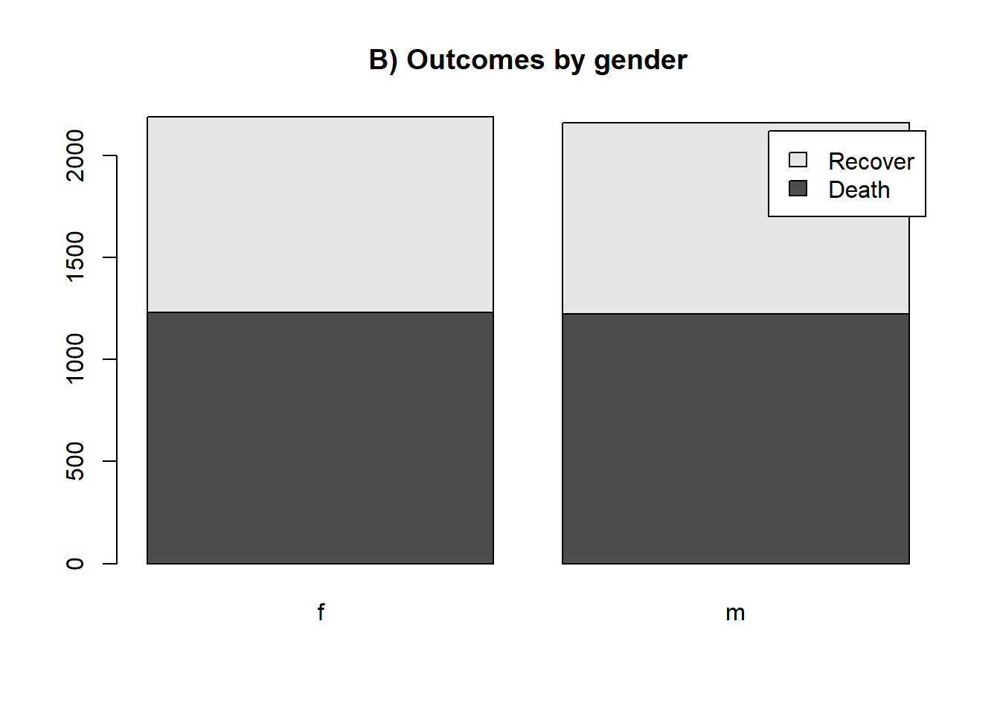
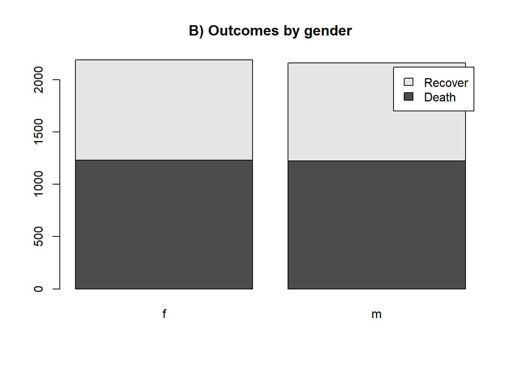
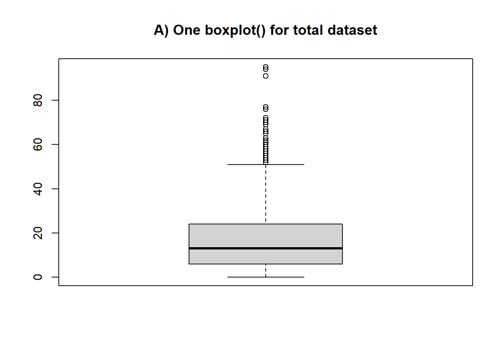

29 Plotting categorical variables
For appropriate plotting of categorical data, e.g. the distribution of sex, symptoms, ethnic group, etc.
29.1 Overview
Overview
In this section we cover use of R’s built-in functions or functions from the ggplot2 package to visualise discrete/categorical data. The additional functionality of ggplot2 compared to R means we recommend it for presentation-ready visualisations.
We cover visualising distributions of categorical values, as counts and proportions.
29.2 Preparation
Preparation
Preparation includes loading the relevant packages, namely ggplot2, (install.packages("ggplot2") if needed), and ensuring your data is the correct class and format.
For the examples in this section, we use the simulated Ebola linelist, focusing on the discrete variables hospital, outcome, and gender.
For displaying frequencies, you have the option of creating plots based on:
- The linelist data, with one row per observation, or
- A summary table based on the linelist, with one row per category. An example is below to show the use of
dplyrto create a table of case counts per hospital.
Tables can be created using the ‘table’ method for built-in graphics
## [1] "table"
outcome_nbar # View full table##
## Death Recover
## 2582 1983Or using other data management packages such as dplyr
#Dplyr method
outcome_n <- linelist %>%
group_by(outcome) %>%
count
class(outcome_n) # View class of object## [1] "grouped_df" "tbl_df" "tbl" "data.frame"
outcome_n #View full table## # A tibble: 3 x 2
## # Groups: outcome [3]
## outcome n
## <chr> <int>
## 1 Death 2582
## 2 Recover 1983
## 3 <NA> 132329.3 Plotting with base graphics
In-built graphics package
Bar plots
To create bar plots in R, we create a frequency table using the table function. This creates an object of a table class, that R can recognise for plotting. We can create a simple frequency graph showing Ebola case outcomes (A), or add in colours to present outcomes by gender (B).
Note that NA values are excluded from these plots by default.
# A) Outcomes in all cases
outcome_nbar <- table(linelist$outcome)
barplot(outcome_nbar, main= "A) Outcomes")
# B) Outcomes in all cases by gender of case
outcome_nbar2 <- table(linelist$outcome, linelist$gender) # The first column is for groupings within a bar, the second is for the separate bars
barplot(outcome_nbar2, legend.text=TRUE, main = "B) Outcomes by gender") # Specify inclusion of legend 

29.4 Plotting with ggplot
Plotting with ggplot()
Code syntax
Ggplot has extensive functionality, and the same code syntax can be used for many different plot types.
Similar to the plotting continuous data section, basic breakdown of the ggplot code is as follows:
ggplot(data = linelist)+
geom_XXXX(aes(x = col1, y = col2),
fill = "color") -
ggplot()starts off the function. You can specify the data and aesthetics (see next point) within the ggplot bracket, unless you are combining different data sources or plot types into one -
aes()stands for ‘aesthetics’, and is where the columns used for the visualisation are specified. For instanceaes(x = col1, y = col2)to specify the data used for the x and y values. -
fillspecifies the colour of bars, or of the subgroups if specified within theaesbreacket. -
geom_XXXspecifies what type of plot. Options include:-
geom_bar()for a bar chart based on a linelist -
geom_col()for a bar chart based on a table with values (see preparation section)
-
For more see section on ggplot tips).
Bar charts using raw data
Below is code using geom_bar for creating some simple bar charts to show frequencies of Ebola patient outcomes: A) For all cases, and B) By hospital.
In the aes bracket, only x needs to be specified. Ggplot knows that y will be the number of observations that fall into those categories. Note that a bar is generated for cases with missing outcomes; these may be cases without known outcome or who are still currently sick.
# A) Outcomes in all cases
ggplot(linelist) +
geom_bar(aes(x=outcome)) +
labs(title = "A) Number of recovered and dead Ebola cases")
# B) Outcomes in all cases by hosptial
ggplot(linelist %>% filter(!is.na(outcome))) +
geom_bar(aes(x=outcome, fill = hospital)) +
theme(axis.text.x = element_text(angle = 90)) +
labs(title = "B) Number of recovered and dead Ebola cases, by hospital")

Bar charts using processed data
As above, below is code using geom_col for creating simple bar charts to show frequencies of Ebola patient outcomes: A) For all cases, and B) By hospital. Note that a bar is generated for cases with missing outcomes; these may be cases without known outcome or who are still currently sick. We remove them in graph B.
With geom_col, both x and y need to be specified. Here x is the discrete variable outcome and y is the generated frequencies column n. To create B), an additional table needs to be created for frequencies of the combined categories outcome and hospital.
# A) Outcomes in all cases
ggplot(outcome_n) +
geom_col(aes(x=outcome, y = n)) +
theme_minimal() +
labs(title = "A) Number of recovered and dead Ebola cases")
outcome_n2 <- linelist %>%
group_by(hospital, outcome) %>%
count()
head(outcome_n2) #Preview data## # A tibble: 6 x 3
## # Groups: hospital, outcome [6]
## hospital outcome n
## <chr> <chr> <int>
## 1 Central Hospital Death 193
## 2 Central Hospital Recover 165
## 3 Central Hospital <NA> 96
## 4 Military Hospital Death 399
## 5 Military Hospital Recover 309
## 6 Military Hospital <NA> 188
# B) Outcomes in all cases by hospital
ggplot(outcome_n2 %>% filter(!is.na(outcome))) + #Remove missing outcomes
geom_col(aes(x=outcome, y = n, fill = hospital)) +
theme_minimal() +
labs(title = "B) Number of recovered and dead Ebola cases, by hospital")

Rather than presenting frequencies, we can also calculate proportions and graph these, as shown in A) below. Here rather than showing the distribution of hospital of admission among those who died and recovered, we show the outcome distribution of patients by hospital.
As shown in B, we can also change the stacked bar plot appearance, so that each subcategory is a separate bar, using position = "dodge". This is sometimes appropriate in that it allows for easier comparison of the height of each category. Both examples below also use coord_flip for horizontal plots.
outcome_n2 <- outcome_n2 %>%
group_by(hospital) %>%
mutate(prop = n/sum(n)) # Calculate proportions
# A) % outcome by hospital
ggplot(outcome_n2) +
geom_col(aes(x=hospital, y = prop, fill = outcome)) +
coord_flip() + # Change the view to horizontal so it is easier to read
labs(title = "A) Proportion of recovered and dead Ebola cases by hospital - option 1")
# B) Outcomes in all cases by hosptial
ggplot(outcome_n2) +
geom_col(aes(x=hospital, y = prop, fill = outcome), position = "dodge") +
coord_flip() + # Change the view to horizontal so it is easier to read
labs(title = "B) Proportion of recovered and dead Ebola cases, by hospital - option 2")
We can also use faceting to create futher mini-graphs, as detailed in the continuous data visualisation section. Specifically, one can use:
-
facet_wrap()- this will recreate the sub-graphs and present them alphabetically (typically, unless stated otherwise). You can invoke certain options to determine the look of the facets, e.g.nrow=1orncol=1to control the number of rows or columns that the faceted plots are arranged within. See plot A below. -
facet_grid()- this is suited to seeing subgroups for particular combinations of discrete variables. See plot B below.